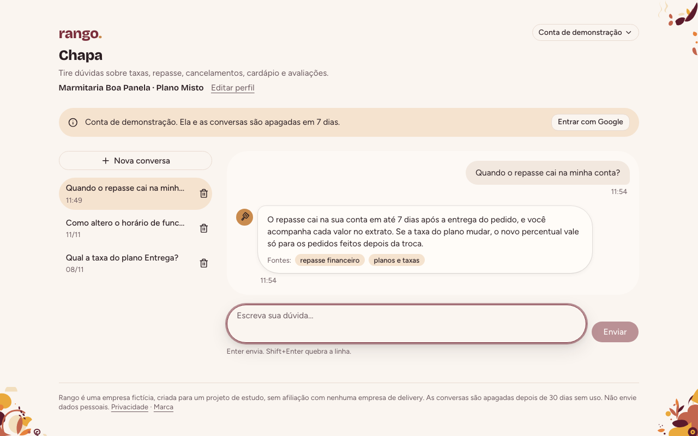

Projeto de estudo
Chapa
Um assistente com RAG para restaurantes parceiros de um app de delivery. Responde dúvidas sobre repasse, comissão e cancelamentos, cita a fonte e recusa o que está fora do escopo.

- O problema
- As mesmas dúvidas se repetem, e as respostas estão espalhadas em páginas diferentes.
- O que eu fiz
- RAG híbrido (embeddings mais busca por palavras em português), memória de conversa e guardrails na entrada e na saída. Trabalhei guiada por specs (no meio do caminho passei a usar o OpenSpec): cada mudança implementada por um agente de código, revisada e integrada por PR com CI. As decisões ficaram registradas em 28 ADRs.
- Como medi
- Um conjunto de avaliação com 73 perguntas (45 que ele deve responder, 16 que deve recusar e 12 de conversa), mudando uma variável por vez. A maior virada foi mandar ao modelo o documento inteiro, e não só o trecho encontrado, já que são documentos curtos.
- 69% 91% de acerto nas respostas
- 27% 7% de falsa recusa
- 100% de recusa correta fora do escopo
Sem afiliação com nenhuma empresa de delivery.